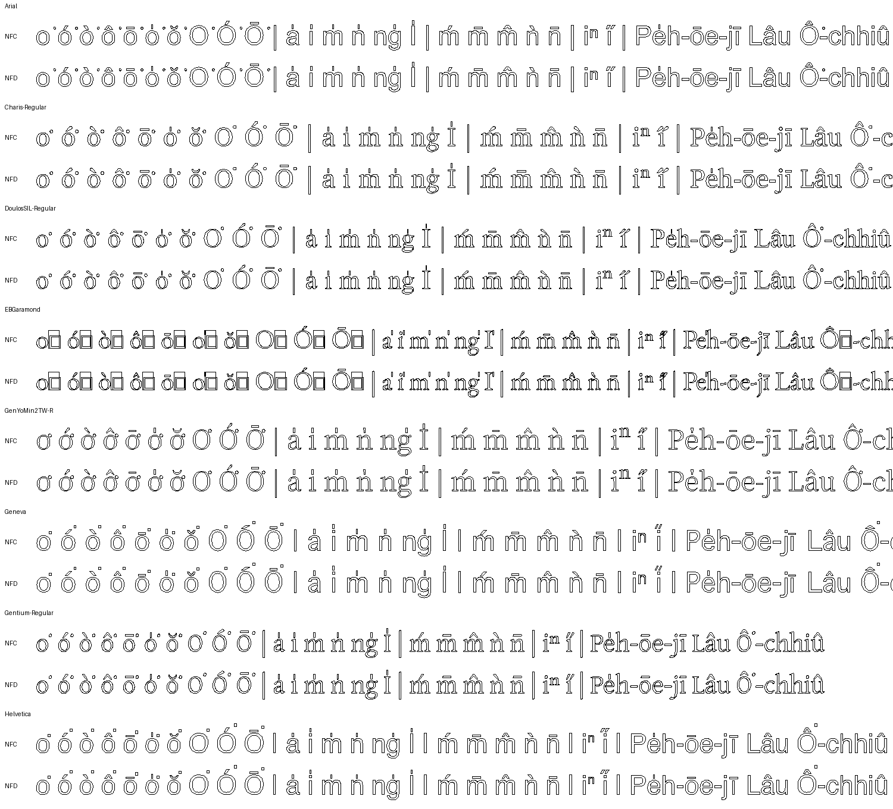
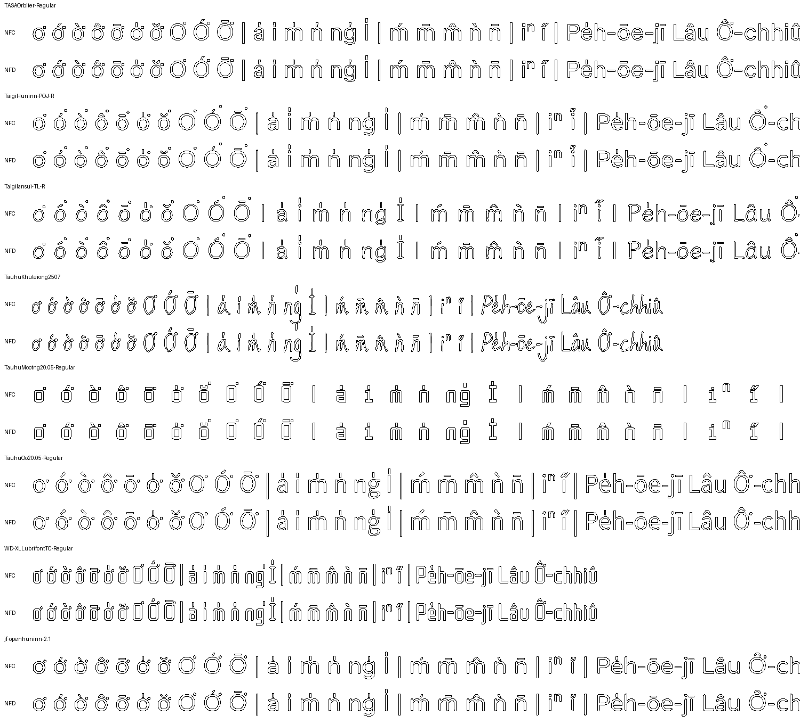

24-Font Audit, Recommendations & Specimens
Free and open fonts tested across all POJ clusters in NFC and NFD, an interactive test bench, the full 24-font HarfBuzz audit explorer, and rendered PNG specimens.
Recommended free & open fonts
For running POJ text
| Font | Style | License | Technique | Notes |
|---|---|---|---|---|
| Lesson One | Clean sans-serif | OFL 1.1 | B + A | Top pick for sans-serif. Every test cluster correct in NFC, NFD, and reverse order. |
| POJ Chhiu-ki | POJ display/text | Apache-2.0 | A | Built specifically for POJ; clean anchor positioning throughout. |
| Charis, Doulos, Gentium (SIL) | Book-style serif | OFL 1.1 (RFN) | A + C | Excellent book typography. Spacing dot (Way C) prevents collisions. Forks must be renamed. |
| TASA Explorer / Orbiter | Modern sans-serif | OFL 1.1 | B + A | Correct when downloaded from GitHub. Do not load from Google Fonts (strips POJ marks). |
| Source Sans 3 | Sans-serif | OFL 1.1 | A | Clean except rare 9th-tone ŏ͘ / Ŏ͘ (missing anchor). Avoid Google Fonts web delivery. |
For Han characters + POJ (漢羅)
| Font | Style | License | Technique | Notes |
|---|---|---|---|---|
| jf open 粉圓 2.1 (Huninn) | Rounded | OFL 1.1 | B + A | Every test letter correct; dedicated Taigi slice on Google Fonts. |
| 芫荽 Iansui | Handwritten Kai | OFL 1.1 | B + A | Every test letter correct; dedicated Taigi slice on Google Fonts. |
| WD-XL Lubrifont TC 滑油字 | Sans-serif | OFL 1.1 | B + A | ccmp dynamic composition + full mark/mkmk safety net. |
| 一點明體 I.Ming | Ming (serif) | IPA Font 1.0 | B + A | Very solid; U+0358 anchors only on o ō, with ligatures covering the rest. Uses IPA licence, not OFL. |
| 源樣明體 GenYo Min | Ming (serif) | OFL 1.1 | B only | This documentation site uses GenYo Min. Ready-drawn ccmp glyphs (dot drawn close to the bowl, horn-like); no mark safety net for unlisted clusters. |
| 豆腐烏 / Tāu-hū family (Khu-lé-iòng, Môo-tn̄g, Tauhu Oo) | Various | OFL 1.1 | B only | Clean on common clusters via ccmp; no mark table for uncovered combinations. |
Fonts to avoid for running POJ
| Font | Observed failure |
|---|---|
| EB Garamond | Missing U+0358 entirely (tofu boxes); U+030D unanchored; no dotless i̍. Listed on some Taigi font pages — not usable for o͘. |
| 字咍 Taigi IVS fonts (for running POJ) | Excellent for Han-character ruby (8,021 IVS mappings), but Latin part has no mark table and keeps the dot under i̍. |
| Arial (macOS copy) | U+0358 is an unanchored overstrike; because Arial has mark, HarfBuzz disables fallback and the dot lands after the letter. |
| Helvetica, Geneva, Menlo (macOS) | No mark table and no dotless i̍; HarfBuzz fallback floats dots high on capitals Ó͘ Ō͘. |
Use the dedicated Live POJ Test Bench → to preview local fonts, toggle letter-spacing, copy NFC / NFD / Reverse-order test strings, and inspect live Unicode codepoints.
Complete 24-font survey matrix (Regular weights)
All audited fonts below map U+0358, U+030D, and U+207F, except EB Garamond (no U+0358). “mark” indicates the presence of a GPOS mark feature.
| Font | License | Technique | mark | Dotless i̍ | Detailed findings |
|---|---|---|---|---|---|
| Source Sans 3 (Adobe) | OFL 1.1 | A | ✓ | ✓ | ŏ͘ and Ŏ͘ unanchored → dot at (0,0), no fallback. Google Fonts drops marks. Rest is clean. |
| POJ Chhiu-ki (aiongg) | Apache-2.0 | A | ✓ | ✓ | Built for POJ (81 U+0358 / 54 U+030D anchor bases). Clean across all clusters. |
| NunitoPOJ (aiongg / taigivs IME) | OFL 1.1 | B (liga), A, PUA | ✓ | ✓ | PUA E400–E435 (55 slots). liga ligatures use non-canonical order and never fire in HarfBuzz; ccmp + anchors still render o͘ and i̍ cleanly even with liga off. |
| Lesson One (But) | OFL 1.1 | B (ccmp, both orders) + A | ✓ | ✓ | Best-practice reference implementation. |
| TASA Explorer / Orbiter | OFL 1.1 | B + A | ✓ | ✓ | Clean from GitHub. Google Fonts web version lacks U+0358/U+030D/ⁿ. |
| jf open 粉圓 2.1 (Huninn) | OFL 1.1 | B + A | ✓ | ✓ | Clean; on Google Fonts with dedicated Taigi slice #106. |
| 芫荽 Iansui (But) | OFL 1.1 | B + A | ✓ | ✓ | Clean; on Google Fonts with dedicated Taigi slice #104. |
| WD-XL Lubrifont TC | OFL 1.1 | B (ccmp dynamic) + A | ✓ | ✓ | Clean across all test clusters; includes 24 IVS entries. |
| 一點明體 I.Ming | IPA Font 1.0 | B + A | ✓ | ✓ | 60,597 glyphs; U+0358 anchors only on o ō; ccmp ligatures cover the rest of the test set. |
| 源樣明體 GenYoMin2 TW | OFL 1.1 | B only | ✗ | ✓ | Dot drawn close to bowl (horn-like). Uncovered clusters depend on engine fallback. Used by this site. |
| Tāu-hū Khu-lé-iòng / Môo-tn̄g / Tauhu Oo (豆腐烏) | OFL 1.1 | B only | ✗ | ✓ | Same caveat as GenYo: clean ccmp coverage for standard clusters, no GPOS mark safety net. |
| Charis / Doulos / Gentium (SIL) | OFL 1.1 (RFN) | A + C | ✓ | ✓ | Excellent. Spacing dot (GDEF class 1, 200–279u advance); 223 PUA glyphs. Forks must rename. |
| EB Garamond | OFL 1.1 | A (no U+0358) | ✓ | ✗ | U+0358 is tofu; U+030D unanchored (misplaced tick). Not usable for o͘. |
| 字咍 Taigi IVS fonts | OFL / Apache-2.0 | D + IVS ruby | ✗ | ✗ | 8,021 IVS ruby mappings per font. Weak for running POJ (no mark, dotted i̍). |
| Arial (macOS copy) | Proprietary | A (030D) + D (0358) | ✓ | ✓ | U+0358 unanchored overstrike; HarfBuzz disables fallback because mark exists. |
| Helvetica / Geneva / Menlo (macOS) | Proprietary | D | ✗ | ✗ | No GSUB/GPOS; HarfBuzz fallback floats dot on Ó͘ Ō͘. CoreText may differ (AAT). |
Fonts listed online but not yet tested
- Caivun (itch.io; page states SIL OFL) — needs direct file download and audit.
- Kaukhia (itch.io; CC BY 4.0) — Creative Commons advises against CC licences for fonts, though reuse is permitted.
- Indeciso — download site is JavaScript-only; not yet fetched.
- Chiron 昭源 (OFL) — no POJ claim on its site (note: Chiron Hei HK and Chiron Sung HK appear in the 55 Google Fonts families that map POJ characters; see Google Fonts Survey).
- 嘉市體 — free to use, but no modification allowed, so not open source.
Interactive 24-font HarfBuzz audit explorer
Inspect the complete machine-generated dataset from data/poj-font-audit.json: per-font character coverage, GSUB/GPOS feature tags, U+0358/U+030D anchor counts, and every shaped cluster in NFC vs NFD.
Rendered NFC vs NFD specimens
Rendered with HarfBuzz. For every font, the first row is NFC and the second row is NFD on our POJ test line. Click any specimen to zoom.

docs/img/specimen-0.png) — click image to view full resolution.
docs/img/specimen-1.png) — click image to view full resolution.
docs/img/specimen-2.png) — click image to view full resolution.